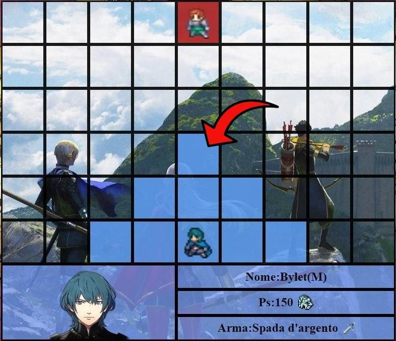
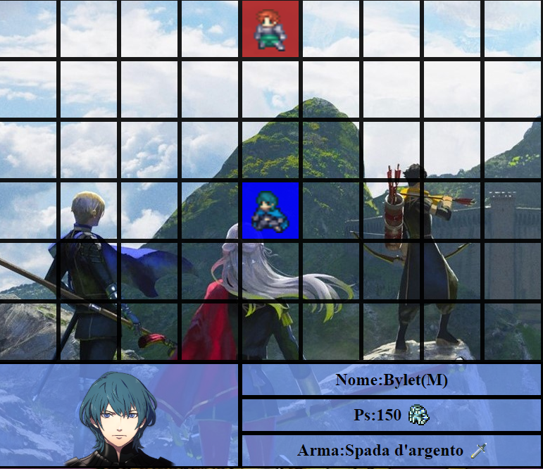
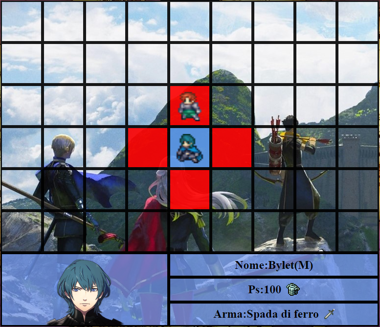
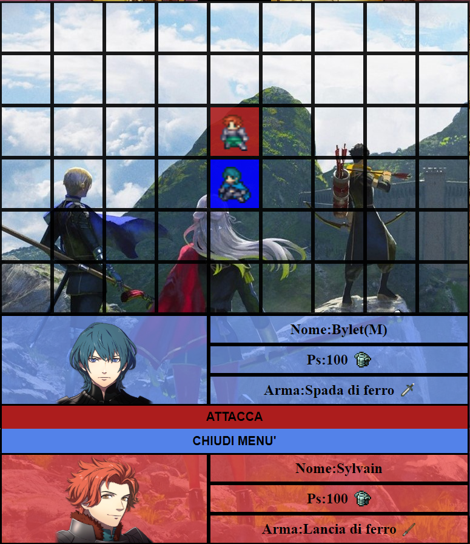
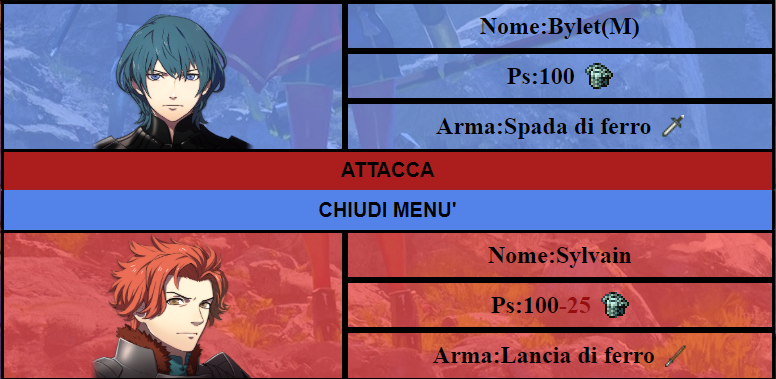
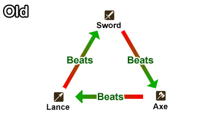

Fire Emblem è un videogioco strategico a turni, dove il giocatore dovrà cercare di sconfiggere tutti i propri avversari
nel campo di battaglia.
Durante il proprio turno il giocatore potrà muovere ogni sua unità ed attaccare con essa.
Cliccando su di una unità non ancora mossa, essa mostrerà la propria area di movimento (celeste).
Cliccando su di un blocco appartenente all'area di movimento, sarà possibile fare uno spostamento con l'unità

Una volta fatto lo spostamento, cliccando di nuovo sull'unità apparirà l'area d'attacco (in rosso).
Cliccando su un blocco compreso nell'area d'attacco, contenente un personaggio della squadra avversaria, apparirà un menu' che permetterà al giocatore di sferrare un attacco.
 Cliccando su "ATTACCA" comincerà il duello, dove l'attaccante sarà il primo a sferrare l'attacco, ma se il difensore rimane in vita, contrattaccherà.
I danni si basano non solo sulla potenza del proprio equipaggiamento, ma anche su un sistema di debolezze e resistenze a triangolo, ben spiegate da questa immagine:
Una debolezza aumenta il danno ricevuto del 50% rispetto alla potenza standard dell'arma, mentre una resistenza abbassa tale danno del 50%.